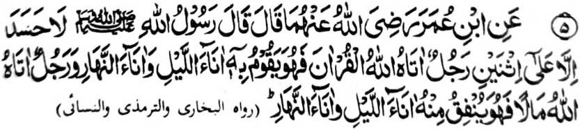

Miyakathitayan ko Ibn Umar (Radhiallaho ‘Anhoma) a pitharo iyan a pitharo o Rasulollah (Sallallaho ‘Alaihi wa Sallam), “Da-a kapangasigi inonta si-i ko dowa:
- So mama a bigan o Allah sa [sabot ko] Qur’an a sekaniyan na ipamamayandeg iyan sekaniyan (a kabatiya sa Qur’an) ko manga kagagawi-i ago so manga kadaondao,
- go so mama a bigan o Allah sa tamok a sekaniyan na gi-i niyan izasadeka ko manga kagagawi-i ago so manga kadadaondao.”
Si-i ko kiyapayag iyan ko kadakelan a Ayaat sa Qur’an ago so madakel a Hadith, na so ‘hasad’ [kapangasigi] na marata ago titho den a inisapar. Giyangka-iya a Hadith na lagid o ba niyan piyakay si-i ko kipangasigin ko dowa a mama. Sabap sa madakel a Hadith a piyagosay niyan so ‘hasad’, na so manga Ulama na tiyapsir iran angka-iya Hadith sa dowa a okit:
Paganay ron, na so ‘hasad’ na aya isa a basa-on a Arab na ‘Ghibtah’, sa aya miyapema-ana niyan si-i na kapamagasiga. Aden a mbida-an o kasigi ago so kapagasiga. So ‘hasad’ na so kazinganina o tao a mada ko ped iyan angkoto a inikasigi niyan non melagid o makowa niyan angkoto a nganin o di na di niyan makowa, ogaid na so kapagasiga na giyoto so kazinganina ko kapakakowa sa lagid angkoto a inikasigi niyan melagid o mada sangkoto a salakao a tao antawa-a ka di.
Sabap sa so ‘hasad’ na haram (ko kokoman non o Agama) na aya kokoman non ko ‘Ijma [kiyaopakatan ko manga Ulama], na so manga Ulama, sabap bo ko kapephaka-okit iyan sa abaya-bayan, na aya inipema-ana iran ko ‘hasad’ na ‘ghibtah’, ma-ana kapagasiga. So ‘ghibtah’ na piyakay ko kapaginetao sa donya ago inipangoyat makapantag ko galebek ko Agama.